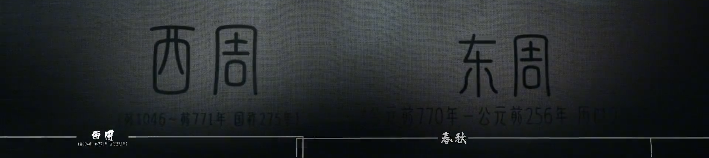

连载上篇：一文看懂商朝，商纣到底是不是昏君
这是中国历史上统治时间最长的王朝。传说，周朝建立之前，周文王姬昌曾给姜子牙当了一回车夫，于是就有了文王拉车八百步周朝天下八百年的传说。那么周王朝到底为什么能够延续长达八百年之久呢？在这近八百年的时间里到底都发生了什么呢？
要想彻底看懂周朝史，首先我们要明白一个概念，历史上一个时期能够被称为朝，就代表它是当时中华大地上唯一的一个合法政权。即使到了春秋战国时期，各路诸侯闹得天下大乱，落魄的周天子也是唯一的天下共主。因此历史上将周朝又分为西周和东周两个时期。分水岭，也就是我们耳熟能详的烽火戏诸侯的周幽王了。而东周的历史又可以被分为春秋时期和秦灭周之前的战国时期。要了解其中的故事，我们还得从头说起。
目录
- 西周
- 牧野之战
- 周公东征
- 成康之治
- 西周没落
- 东周
- 二王并立
- 文侯擒王
- 繻(xū)葛之战
- 王子克之乱
- 五大夫之乱
- 三家分晋
- 田氏代齐
- 东周没落
一、西周
1.1 牧野之战
从公元前1046年，周武王于牧野之战，以少胜多，击败商纣王，建立周朝开始。到公元前256年，周赧(lǎn)王病逝，周被秦所灭为止，周朝一共传国君32代，共37王，享国共计790年。周王朝刚刚建立之初，天下的开发范围还仅仅只是黄河沿岸的中原地区，于是周武王用一纸空文大封天下诸侯，让他们心甘情愿地为自己开发那些蛮荒之地。看似皇恩浩荡，实则堪比天下第一阳谋。你以为这以后周王朝就可以顺顺当当的发展了吗？事实上周武王在建国之后，仅仅过了3年就挂了。
1.2. 周公东征
公元前1043年，年幼的周成王即位。因为当时的周成王还是个小屁孩，所以只能由周武王的弟弟周公姬旦主政。但这就引起了周武王其余的三个弟弟，管叔、蔡叔和霍叔的强烈不满。本来这三个人是被周武王派去看着商纣王之子武庚的，没想到最后却和武庚一起联合着东方的几个小国家，爆发了三监之乱，撼动了周王朝的根基。公元前1042年，为了巩固周朝的统治，周公亲率大军东征，以重兵沿武王伐纣的路线，直取朝歌杀武庚。诛管数放逐蔡叔，贬霍叔为庶人，之后继续进兵东南，采用先弱后强的战术，攻灭九夷17国，尽迁殷民于洛邑，用了三年的时间平定了三监之乱，史称周公东征。
1.3. 成康之治
到了公元前1039年，为了更好的掌控东方，周朝在河南境内营建了东都洛邑，作为周朝在东方的统治中心，水以东由殷地移民居住，殷八师驻守，水以西为王城，作为诸侯的朝会之地。公元前1021年，周康王继位，延续了父亲周成王时期的国策。政治上赈济贫困百姓，授田于民。明德慎罚，致使西周在成康二王时期政局稳定、人民和睦、四方外族来朝、天下安定。刑具四十余年未动，史称成康之治。
从公元前980开始，周昭王以诸侯国为先锋，亲统大军渡过汉水、跨过长江，三次南征虎方，荆楚等地，大军经由唐一路高歌猛进，直至江汉地区收获颇丰。周军不仅打了胜仗，还缴获了大量的战利品青铜。但在周昭王第三次南征胜利班师回朝的时候，因为携带的战利品过多，以至于浮桥承受不住突然垮塌，周昭王在混乱之中溺水而死，后人称之为昭王南征而不复。
公元前977年，西巡第一人周穆王即位，他的名气可能还赶不上自己的座驾，那就是著名的穆王八骏。周穆王上位后发布了《臩(jiǒng)命》，向朝廷官员重申执政规范，制定了墨、劓(yì)、膑、宫、大辟五型，励精图治，天下再度安宁，保持了昭王盛世的延续。公元前964年，周穆王西征，进兵阳纡(yū)，周军大胜。由于周穆王对边疆少数民族采取的高压政策，致使周王朝在周边外族中失去威信。在两征犬戎之后，周穆王继续西伐，大军行至昆仑之丘。这是中国历史上最早有史料记载的中原与西域的文化交流，但酷爱出巡的周穆王也因此耗费了国家的巨额财富。
等到公元前922年，周共王继位的时候，国家财政已变得异常空虚，经济难以维持，父债只能子偿。好面子的周共王为了维护天下共主的面子，只好将都城附近的土地都陆续分封给诸侯大夫，这就使得周朝能够直接支配的地域越来越小，周王朝的国势也开始衰落。
公元前900年，周懿王即位，西周朝政日趋腐败，西戎开始侵略周朝，边境一度兵临镐(hào)京。北方翟人对岐周虎视眈眈，国人深受其苦。周懿王曾出兵北伐犬戎，但结果大败而归，在位八年后忧惧而终。
周懿王死后，发生了一件足以改变中国历史走向的事情。周懿王的叔父姬辟方乘机夺走了太子的王位，并决心复兴周朝，史称周孝王。于是周孝王就在渭水之间的草原上开辟了一个牧场，用重金招募了一个叫非子的人为他驯养战马。非子因马养得非常好，而获封了秦地几十里的土地，这就是日后秦国的发源地。但周孝王没能实现振兴周室的理想，就病死了。直到第九位君主周夷王在位的时候，周朝才勉强打了一次胜仗，周夷王派六军之师灭了太原之戎，一直打到俞泉，大获全胜，缴获战马一千匹，史称夷王伐戎。但他除了打仗厉害点，脑子却不太好使，听信纪国国君的谗言，烹杀了齐哀公。
等到了公元前878年，周厉王在位的时候，周王室就变得更加荒诞了。为了维持王室的开销，周厉王横征暴敛，不仅加重了对劳动人民的剥削。还将社会财富和资源进行了垄断，什么树啊、水啊、空气啊都是我的，你只要用了就得交税，谁给我所交的钱多，谁就可以当大官。不出意外，这很快就导致了国人暴动。厉王只好逃出镐京，越过黄河，逃到周朝的边境彘(zhì)，朝中，变成了共和行政。十四年后，周厉王死于彘。
等到了公元前827年，西周的第十一代君主周宣王姬兴继位时，在政治上任用贤臣辅佐朝政，在军事上借助诸侯之力多次对外用兵，使周王朝一度呈现四方既平、王国庶定的局面，史称宣王中兴。但连年的征战也消耗了大量的国力。加上周宣王晚年独断专行、不进忠言，致使宣王中兴最终昙花一现，周王朝还是没能走出衰落的局面。
1.4. 西周没落
公元前782年，西周的最后一位君王周幽王即位。 周幽王宠信小三褒姒，废了太子和皇后，还贬了自己老丈人申侯的爵位。这娘家人哪能咽下这口气？于是申侯就联合了犬戎，一起找周幽王算账，这就导致了镐京之战的爆发。但因周幽王曾为博美人褒姒一笑，烽火戏诸侯，导致犬戎入侵后无人前来勤王。犬戎和申侯联军一路长驱直入，直达镐京。西周六军共计七万五千人，被犬戎和申侯联军击溃，全军覆没。周幽王也被捕杀于戏水之上，诸侯只好拥立前任太子姬宜臼继位 ，是为周平王，建立东周。
二、东周
这是中国历史上的一段大分裂时期。一百多个诸侯国为了争夺霸主之位，混战不休，天子权威荡然无存。同时，它也是一个英雄辈出、百家争鸣的时代，为中国日后的全国性统一奠定了基础。
2.1. 二王并立
从公元前770年，周平王东迁洛邑，建立东周开始，到公元前256年，周赧(nǎn)王病逝，周朝被秦所灭为止，东周共传国君25位，享国共计515年。这一时期中国的社会制度发生着剧烈的转变，铁器被广泛的使用，战略思想和军事战术领先同时期其他国家数百年。故事的开始，我们还要从镐京之战说起。镐京之战后，申鲁等诸侯国拥立了被周幽王废掉的原太子姬宜臼为王，建立了东周，史称为周平王。但经过战火洗礼的镐京已经残破不堪，加之镐京一直处在犬戎的威胁之下，周平王只好在晋国和郑国的护卫下，将都城迁到了洛邑。与此同时，北虢(guó)公姬翰等十几家诸侯，也在一个叫携的地方拥立了周幽王的弟弟姬余臣为王，史称周携王。自此，周王室出现了二王并立的局面。
2.2. 文侯擒王
直到公元前760年，晋文侯为了讨好周平王，出兵杀死了周携王，这才结束了周王室长达十年的二王并立的局面，稳定了东周初期的局势。史称文侯擒王。但自此，周王室已经空有天下共主的虚名了，中国进入了历史上的大分裂时期。
2.3. 繻(xū)葛之战
周平王在位五十年后去世，由于周平王实在是太能活了，等到他病逝的时候，太子姬泄父早就已经死了，东周的王位只好交到了周平王的孙子手中，史称周桓王。周桓王是一个有抱负的好青年，他不甘心朝政被郑家把控，并计划削弱侵权、加强王权，罢免了郑庄公的职位。自此，周郑交恶，郑庄公不再朝见天子。觉得脸面上挂不住的周桓王联合了与郑国不和的卫、蔡、陈三国，一同讨伐郑国。双方爆发了繻(xū)葛之战，结果郑庄公大败天子联军，周桓王重剑负伤，自此，天子威严尽失，再也无力阻止诸侯国之间的互相攻伐。
2.4. 王子克之乱
周桓王在位二十三年后去世，可这个周桓王临死之前还不消停，他将自己偏爱的次子姬克委托给了卿士周公黑肩，希望在太子死后王位能够兄终弟及，交付给姬克。等到周庄王正式继位之后，周公黑肩便计划杀掉周庄王，好让周庄王的弟弟姬克继位，自己也可以权倾朝野。但最终因计划泄露，周公黑肩被周庄王所杀，姬克也只好逃亡到了南燕国，史称王子克之乱。
2.5. 五大夫之乱
周庄王一共在位十五年，临死之前他还做了一件大事，就是谈妥了跟齐国的联姻。等到东周的第四位君主周僖(xī)王继位的时候，他的妹夫齐桓公凭借着尊王攘夷的策略，成为了春秋时期的第一位霸主。周僖王也糊里糊涂的成为了自周朝东迁之后第一位被各国诸侯所“尊重”的王，只可惜这个尊重被打伤了引号。周僖王在位过了五年的好日子，病逝后将王位传给了他的儿子姬阆(làng)，史称周惠王。这个周惠王不太懂得审时度势，以为各路诸侯真的害怕自己，刚刚即位便强占了寪(wěi)国的菜园来为自己蓄养野兽，还抢取了周朝几个大夫的土地和田产，最终爆发了五大夫之乱，丢了王位。幸得郑厉公的帮助，周惠王才能够成功复辟，郑国也因此获赐了虎牢以东的土地，这就导致了周王室所掌控的领土进一步缩小。
等到了周襄王姬郑在位的32年里。诸侯争霸日益激烈，被后人称为春秋五霸的齐桓公和晋文公，此时的地位已经凌驾于周王室以及各诸侯国之上。周襄王死后，周顷王和周匡王先后继位，但此时的周王室已经一贫如洗，就连给周襄王办丧事的钱都没有，最后还是鲁国出钱，才在周襄王死后的第二年里将其安葬。二人一共在位12年，便草草卸任。等到了第九任天子周定王时期，在洛邑发生了一件大事，崛起的楚庄王看上了周朝的传国之宝，象征着天下九州的九鼎，并向周定王的使臣王孙满询问九鼎的重量。幸亏王孙满不卑不亢，沉着应对，才保全了周王室的尊严。周定王战战兢兢地做了二十一年天子之后将王位传给了儿子周简王。此时吴国兴起，在吴楚之战中，几乎亡楚。在周简王之后的一百多年里，周王朝共经历了周灵王、周景王、周悼王、周敬王、周元王五位天子，周王室的财政变得日趋困难，就连器皿都要向各国乞讨。
春秋时期结束，越王勾践卧薪尝胆，终灭吴国，成为了被周王室承认的最后一任霸主。东周进入了战国时期。
等到东周第16君主周贞定王在位的时候，发生了一件对中国历史有着深远影响的事情。晋国的三家大夫赵襄子、韩康子和魏桓子，在陆续并吞了其他贵族之后，一同灭了最后一家贵族智伯。俨然，在晋国境内形成了三个国家。连晋幽公都要向他们进行朝贡。周贞定王在位28年后病逝，等到周贞定王死后，东周王室的走向就有点戏剧色彩了。周贞定王共有四个儿子，先是长子姬去疾继位，史称周哀王。周哀王在位仅仅三个月，便被自己的二弟弟周思王姬叔所杀，夺取了王位。而周思王在位五个月之后，又被自己的三弟周考王姬嵬(weī)所杀。周考王担心自己重蹈兄长们的覆辙，并将王畿(jī)河南之地划给了自己的四弟，建立了周国，史称西周桓公。这就为后来的东周再次一分为二埋下了隐患。这事我们以后再说。
2.6. 三家分晋
周考王平平安安的在位十五年，等到了他儿子周威烈王姬午在位时，又发生了一件具有历史意义的事件，韩、赵、魏三家废掉了晋静公，将晋公室剩余的土地全部瓜分，史称三家分晋。历史上也有以三家分晋作为春秋时期和战国分界线的说法。
2.7. 田氏代齐
在周威烈王之后的周安王和周烈王时期，周王室存在的意义仅是为了给诸侯正名。先是周安王承认齐国大夫田和为齐侯使，史称田氏代齐。
2.8. 东周没落
之后是齐威王朝见周烈王，使自己贤明远播。到了周显王时期，我们前面所提到的周考王划地为自己的弟弟西周桓公建立周国所埋下的隐患彻底爆发。赵成侯与韩懿侯乘乱侵周，周王畿(jī)被分裂为西周和东周两个小国，至此周王室的地盘只剩下一座宫殿和几户人家，以及一支几千人的军队。在东周的最后两位天子，周慎靓(jìng)王和周赧(nǎn)王时期，战国七雄为了壮大自己，开始各自找寻盟友，进行了以苏秦为首的”合纵”和以张仪为首的”连横”。楚国为了抑制秦国的扩展，希望周赧王以天子的名义号令各国齐力攻秦。周赧王为了维护最后的尊严，东拼西借武装起了一支五六千人的军队。不料除了楚、燕两国派出了少量的士兵响应之外，其余四国均没有动作。周赧王无奈，只好班师回朝。而那些借给周赧王军饷的人则纷纷跑来讨债，周赧王只好躲到宫后的一个高台上避债，债台高筑的成语便由此而来。公元前256年，周赧王郁愤而终，秦昭襄王迁九鼎占王畿，历时八百年的周王朝走向了终结。
如果你喜欢这个博客或发现它对你有用，欢迎你点击右下角 “OPEN CHAT” 进行评论。也欢迎你分享这个博客，让更多的人参与进来。如果在博客中的内容侵犯了您的版权，请联系博主删除它们。谢谢你！